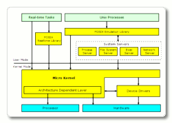
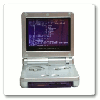

|
|
An Open Source, Royalty-free, Real-time Operating System |
What is Prex?
Prex is an open source, royalty-free, real-time operating system for embedded systems. It is designed and implemented for resource-constrained systems that require predictable timing behavior. The highly portable code of Prex is written in 100% ANSI C based on traditional microkernel architecture.
 The Prex microkernel provides only fundamental features for task, thread, memory, IPC, exception, and synchronization. The other basic OS functions - process, file system, application loading, and networking, are provided by the user mode servers. In addition, Prex provides a POSIX emulation layer in order to utilize existing *NIX applications. This design allows the system to perform both of the native real-time task and the generic POSIX process simultaneously without degrading real-time performance. It also helps platform designers to construct OS by choosing suitable system servers for their target requisition.
Project Goals
The project targets the following goals:- To provide a small, portable, real-time, secure, and robust operating system.
- To provide simple and clean source codes for education and an experimental test-bed.
- To conform to open standards as much as possible.
- To enjoy our life with kernel hacking. ;-)
License
Prex is royalty-free software released under Revised BSD License.
Features
Prex has the following features:- Task & Thread Control: preemptive priority scheduling with 256 priority levels
- Memory Management: memory protection, virtual address mapping, shared memory, MMU or MMU-less configuration
- IPC: object name space, synchronous message passing between threads
- Exception: fault trapping, framework for POSIX signal emulation
- Synchronization: semaphores, condition variables, and mutexes with priority inheritance
- Timers: sleep timers, one-shot or periodic timers
- Interrupt: nested interrupt service routines, and prioritized interrupt service threads
- Device I/O: minimum synchronous I/O interface, DPC (Deferred Procedure Call)
- Security: task capability, pathname-based access control, I/O access permission.
- Real-time: low interrupt latency, high resolution timers and scheduling priority control
- Power Management: power policy, idle thread, DVS (Dynamic Voltage Scaling)
- Debugging Facility: event logging, kernel dump, GDB remote debug
- File Systems: multi-threaded, VFS framework, buffer cache, ramfs, fatfs, arfs, etc.
- POSIX Emulation: pid, fork, exec, file I/O, signal, pipe, tty, pthread, etc.
- Libc: C library fully optimized to generate a small executable file
- CmdBox: a small binary that includes tiny versions of many UNIX utilities.
- Networking: (plan) TCP/IP stack, BSD socket interface
Hardware Requirements
 Prex minimum hardware requirements are as follows:- Processor: 32-bit Processor (x86, ARM, PowerPC)
- Memory: 256KB of RAM (Kernel < 25k bytes)
- Timer: programmable interval timer
Note: RAM requirements may vary depending on the number of system servers being supported.
Copyright© 2005-2009 Kohsuke Ohtani